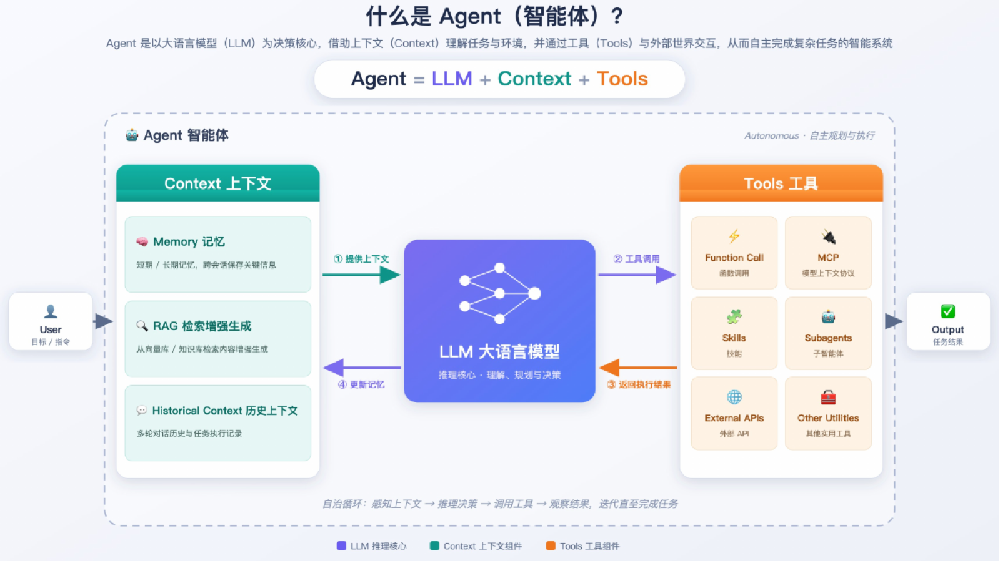
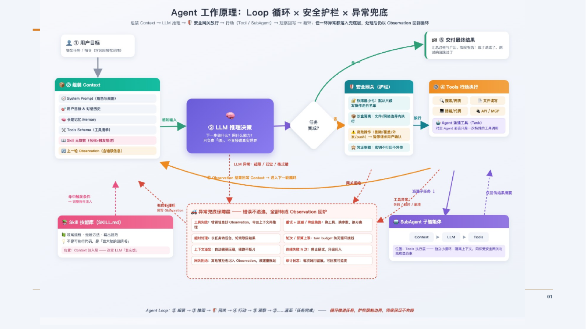
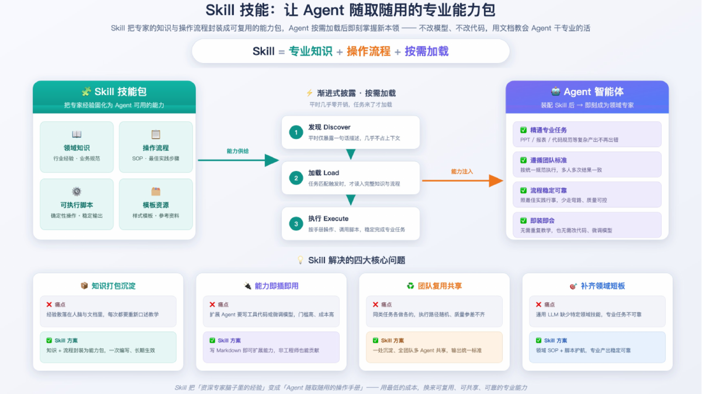
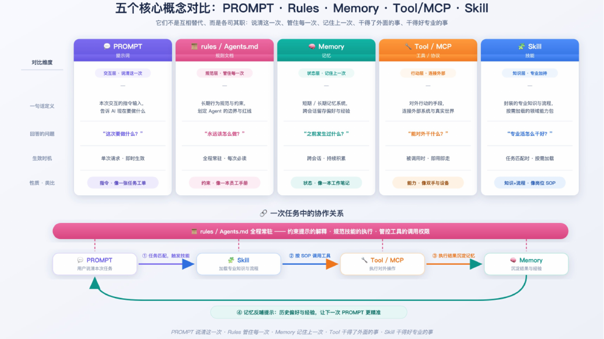

如果把大语言模型看成“会理解和生成的思考核心”，那么 Agent 更像一个能够与环境持续互动的工作系统。它接收用户目标，整理上下文，做出下一步判断，调用工具，再根据结果继续行动，直到任务完成或需要人介入。
这也是这组 PPT 最清晰的起点：Agent = LLM + Context + Tools。缺少上下文，模型不知道自己正在处理什么；缺少工具，它只能停留在文字层面；缺少循环，它无法根据真实结果修正行动。
Context 让 Agent 知道“现在发生了什么”
Context 不只是当前这句话。它可能包括短期或长期 Memory、来自知识库的 RAG 检索结果，以及跨多轮对话和任务留下的历史上下文。上下文的作用，是把一次孤立的提问变成一个有状态的工作现场。
上下文也需要被管理：什么应该被记住，什么只在当前任务有效，什么必须经过检索才能确认。Agent 的可靠性，往往首先取决于它拿到的上下文是否准确、相关、足够。
Tools 让 Agent 能够真正行动
工具是 Agent 连接外部世界的接口：Function Call 可以执行一个明确动作，MCP 可以提供结构化的模型上下文与工具协议，Skills 和 Subagents 则提供更高层的专业能力。外部 API、文件读写和其他实用工具，也都属于这个行动层。
工具并不等于权限。每一个动作都应该有清晰的输入、输出和安全边界，尤其是写入、发布、付款和删除等不可逆操作。

Agent 的关键不是一次回答，而是一个循环
一次稳定的 Agent 执行通常包含几步：
- 接收用户目标，明确任务是否完成的标准。
- 组装 System Prompt、用户目标、历史记忆、工具清单与可用 Skill。
- 由 LLM 推理下一步是继续思考、调用工具，还是向用户追问。
- 经过安全网关检查权限、参数、范围和风险。
- 执行工具并读取 Observation，把结果写回上下文。
- 判断任务是否完成；如果没有，就带着新结果进入下一轮。
这条循环决定了 Agent 是否“像一个真正的助手”。没有 Observation，系统无法知道刚才的动作是否奏效；没有异常兜底，一次工具失败就可能让整个流程失控。
Skill：让 Agent 随取随用专业能力

Skill 不是把更多内容塞进 Prompt，而是把一类专业工作整理成一个可按需加载的模块。它可以包含领域知识、操作流程、可执行脚本和模板资源；Agent 在发现任务匹配后加载它，执行完成后再回到自己的主循环。
一个好的 Skill 应该让专业任务更稳定：同样的输入得到更一致的步骤，同样的标准得到更可控的输出，而且不需要每次都从头解释。
不要把所有东西都叫 Skill

一次性的任务说明，更接近 Prompt；长期有效的行为约束，应该放在 Rules；跨会话保存的事实，属于 Memory；连接外部系统的动作，属于 Tool / MCP。只有当“专业知识 + 操作流程”需要被稳定复用时，才值得把它抽象为 Skill。
好的抽象不是增加名词，而是让下一次调用更可靠。
从一个小 Skill 开始
如果要开始创建 Skill，不必一上来搭建复杂平台。先选择一个高频、边界清楚、结果可验收的任务：需求澄清、Bug 排查、写方案、生成测试清单，或把一次重复的开发流程整理成可执行步骤。
先写清楚“何时使用、输入是什么、步骤是什么、输出如何验收”，再用真实案例反复测试。等它被稳定使用后，再补上版本、监控、异常处理和团队共享机制。
推荐的实践入口
- OpenSpec：围绕局部 Spec 进行编写与执行。
- skills：覆盖需求澄清、写 Spec、执行、解 Bug 和提 MR 等流程。
- superpowers：从头脑风暴、制定计划到执行计划。
这些项目的共同点，不是提供一个“万能 Agent”，而是把工作方法拆成能够被调用、被复用、被改进的能力。对个人而言，这正是从使用 AI 走向构建个人智能系统的一步。